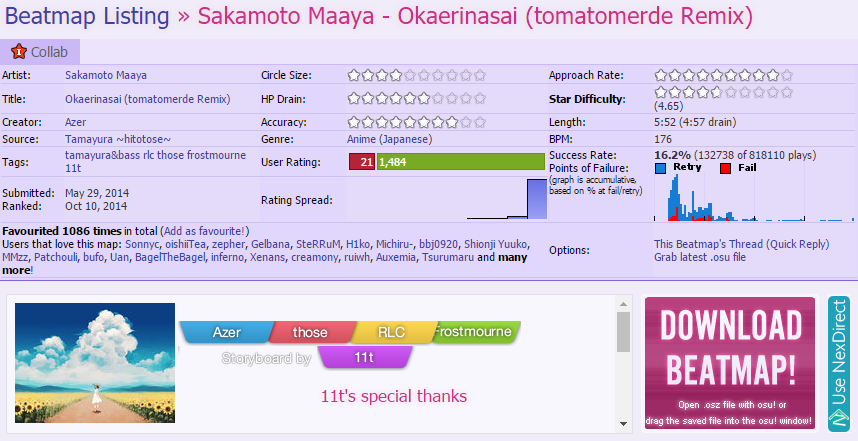

NexDirect - Userscript Guide
Register URI">
Step 1
Register the NexDirect URI scheme for your user account through the Settings menu (click the logo in the bottom right). [I know this sounds like technical dribble, but essentially it allows your browser to communicate with NexDirect.]Step 2
Ensure you have your favorite userscript manager installed in your browser. (Tested with Tampermonkey for Google Chrome, Greasemonkey on Firefox should work too.)Step 3
Visit this link to install the userscript. (Feel free to read through the code if that's your thing, but unless it has been hacked there shouldn't be anything bad...)End
Enjoy your new, shiny download button!

Click here to return to the NexDirect homepage.
(Page background from pixiv#49037131 - miku-chan is cool too)
(Page background from pixiv#49037131 - miku-chan is cool too)